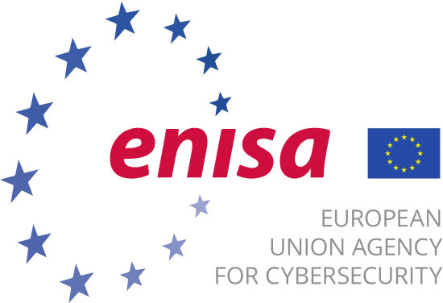
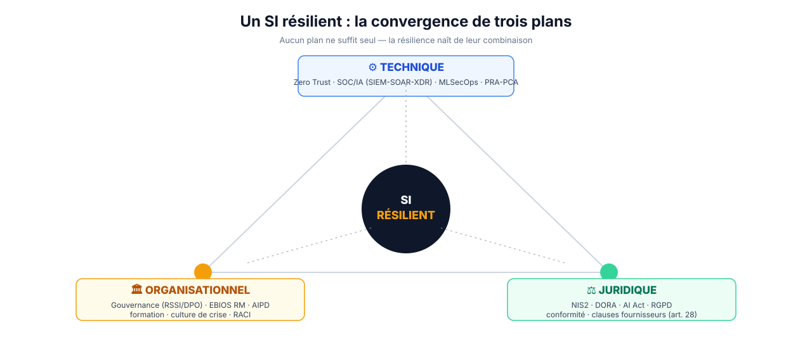

Grand Oral CESI · Sujet blanc · Thème Cybersécurité
Cybersécurité et IA : l'avenir d'un SI résilient
Quand la même intelligence artificielle arme le défenseur… et l'attaquant.
Karim — Master Informatique CESI
Filière « Manager le SI »
02 / 13
Problématique · Plan en trois temps
Le fil rouge de cette soutenance
Comment le manager du SI peut-il faire de l'IA un levier de résilience — plutôt qu'un nouveau facteur de risque — sur les plans technique, organisationnel et juridique ?
Partie I
L'IA, bouclier
La cyberdéfense augmentée : détecter, trier, répondre plus vite.
Partie II
L'IA, arme
La menace se réinvente — et l'IA devient elle-même une cible.
Partie III
Bâtir la résilience
Technique, gouvernance et droit : « assume the breach ».
Angle : manager du SI · volontairement équilibré — ni technophobe, ni naïf.
03 / 13
Accroche · Trois faits, une même technologie
L'épée à double tranchant, en trois chiffres
− 1,9 M$
économisés par violation grâce à l'IA en défense — détection 80 j plus rapide (IBM 2025)
80 %+
des e-mails de phishing sont dopés à l'IA (ENISA 2025)
25,6 M$
détournés par un deepfake de directeur financier en visio (Arup, 2024)
La même IA défend et attaque. Le vrai enjeu n'est plus l'outil — c'est la résilience.
Sources : IBM Cost of a Data Breach 2025 · ENISA Threat Landscape 2025 · CNN / Fortune (fraude deepfake Arup, Hong Kong 2024).
04 / 13
Cadrage conceptuel
Trois mots, trois définitions précises
Concept
Définition opératoire
Cybersécurité
Moyens techniques, organisationnels et humains protégeant la confidentialité, l'intégrité et la disponibilité (triade CIA) des SI. (ANSSI ; ISO/IEC 27000)
IA en cybersécurité
Application du machine learning : apprentissage supervisé (reconnaître le connu) et non supervisé (détecter l'anomalie inconnue).
SI résilient
Capacité à anticiper, résister, se rétablir et s'adapter. On ne cherche plus seulement à empêcher, mais à encaisser et continuer. (NIST CSF 2.0)
Sécurité ≠ Résilience. La sécurité vise à bloquer l'attaque ; la résilience suppose qu'une partie passera — et organise la survie du service.
Sources : IBM Cost of a Data Breach 2025 · Gartner / MarketsandMarkets — marché IA cybersécurité.
06 / 13
Transition · L'IA change de camp
Un outil n'a pas de camp
DÉFENSE ⟷ même machine learning ⟷ ATTAQUE La puissance qui augmente le défenseur augmente aussi l'attaquant.
Côté défense
Côté attaque
Détecter l'anomalie
Contourner la détection (exemples adverses)
Écrire des règles de détection
Écrire des phishing parfaits à l'échelle
Automatiser la réponse
Automatiser reconnaissance & exploitation
Conséquence : la barrière à l'entrée de la cybercriminalité s'effondre.
Le SI, au milieu
La même infrastructure, la même IA — deux usages opposés. Le différenciateur n'est plus l'outil, mais la résilience. Photo : CERN · CC BY-SA 3.0 (Wikimedia Commons)
Transition : du bouclier à l'épée — voyons comment l'IA réarme l'attaquant, et devient elle-même une cible.
07 / 13

Partie II · Le revers, en deux volets
L'IA qui attaque — et l'IA qu'on attaque
A · L'IA qui attaque
Phishing / spear-phishing généré à l'échelle — ENISA : 80 %+ des e-mails
PRA / PCA — sauvegardes immuables → survivre au rançongiciel
🏛️ Organisationnels (le plan trop souvent oublié)
Gouvernance : RSSI + DPO + comité éthique IA
EBIOS RM · AIPD · classification des données
Politique d'usage de l'IA (contre le shadow AI) · RACI
Formation & culture de crise : exercices, red team
⚖️ Juridiques
Conformité NIS2 · DORA · AI Act · RGPD · clauses fournisseurs (art. 28)
90 % des entreprises sans cadre de gouvernance de l'IA. — Thomson Reuters / UNESCO

Sources : NIST SP 800-207 · OWASP Top 10 LLM 2025 · ANSSI EBIOS RM · Le Monde/Cegos (formation) · Thomson Reuters / UNESCO.
12 / 13
Conclusion · Ouverture
L'épée à double tranchant, en équilibre
1
L'IA est un multiplicateur de force pour la défense — réel et mesurable (−1,9 M$ / violation).
2
La même IA arme l'attaquant et devient une cible — 80 % du phishing, deepfakes, empoisonnement.
3
La résilience naît de la convergence technique + organisationnelle + juridique — « assume the breach ».
La question n'est plus si on sera attaqué, mais quand — et si le SI tiendra.
Question ouverte : si défenseurs et attaquants s'équipent de la même IA, l'humain reste-t-il l'arbitre de la cybersécurité… ou en devient-il la variable d'ajustement ?